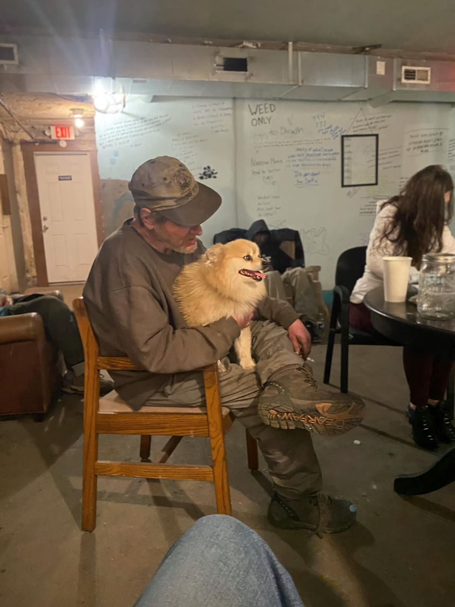

Mobile uploads
This dog would win the prize for “most surprisingly homeless.” You don’t see many purebred Pomeranians walking around the inner city streets of Akron. 
He just doesn’t fit the homeless dog stereotype. He’s too little. He’s too fluffy. He’s just too darn happy for someone who lives outside in the middle of winter.
Most homeless dogs are kind and gentle and wonderful. But they are usually pretty chill. They get a lot of exercise and fresh air. They usually move slowly and relaxed. Not this little guy. He’s all prancey and dancey all the time.
I’m always worried about him when he gets around homeless pitbulls. He doesn’t like them and is always ready to fight. I appreciate his spirit. But it’s a little unrealistic.
Well, I just got news overnight that he has been reunited with his rightful owners.
We’ve been calling him: Little Man or most often, Dog. Very respectable homeless dog names. It turns out his name is Teddy Bear.
Thanks for keeping us all company this winter, Teddy Bear. You are such a positive and upbeat spirit. I hope you had a good time on your homeless winter adventure. We all loved you very much.
I don’t know what they are going to do about feeding Teddy Bear. Like many homeless dogs, he now doesn’t like dog food. He much prefers whatever Georgann is making over at Middlebury Chapel.